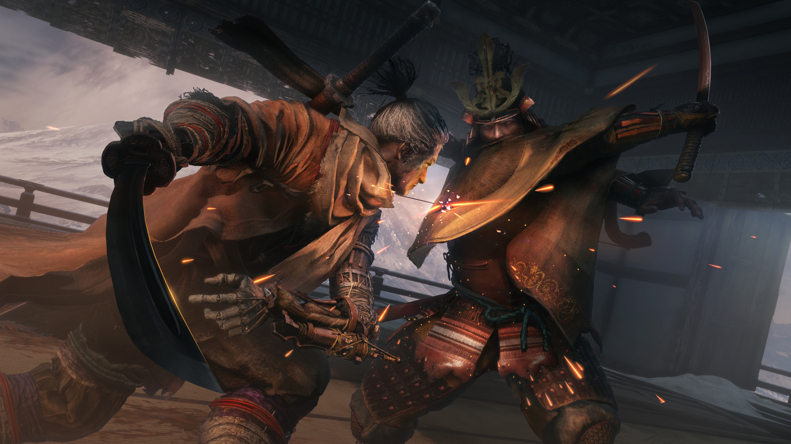

Embrace the Shadows
Experience an intense action-adventure game set in Sengoku period Japan.
Sekiro: Shadows Die Twice is an action-adventure game developed by FromSoftware. Players control a shinobi named Wolf as he seeks revenge on his abductors and rescues his kidnapped lord.
Explore late 1500s Sengoku Japan, a brutal period of constant life and death conflict, as you come face to face with larger than life foes in a dark and twisted world. Unleash an arsenal of deadly prosthetic tools and powerful ninja abilities while you blend stealth, vertical traversal, and visceral head to head combat in a bloody confrontation.

Carve your own clever path to vengeance in the award-winning adventure from developer FromSoftware, creators of Elden Ring, Bloodborne, and the Dark Souls series.